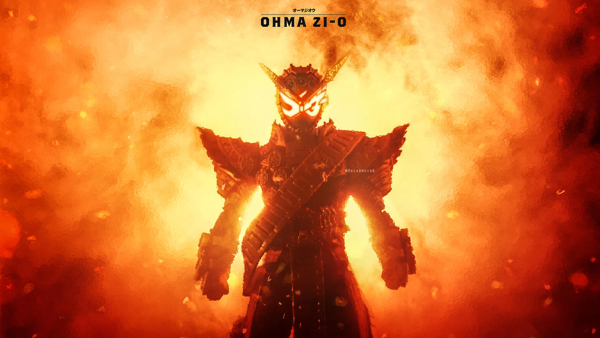
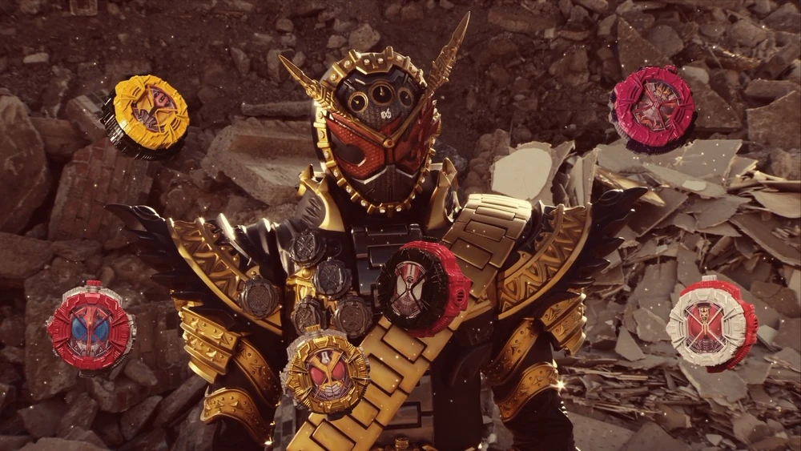
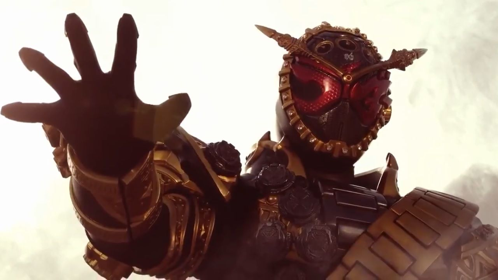
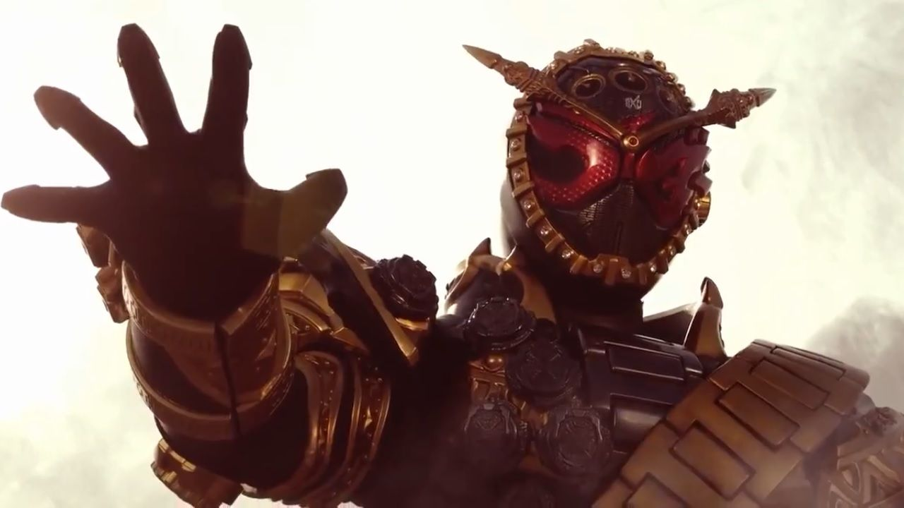

Kamen Rider
Ohma ZI-O
“Kalian orang-orang bodoh tidak akan pernah bisa berharap untuk mengalahkan saya. Apa kalian tahu kenapa? Karena aku dilahirkan untuk menjadi raja!” Deklarasi Ohma Zi-O tentang pemerintahan tangan besi pada tahun 2068.Sougo Tokiwa (Tokiwa Sōgo) adalah penguasa tahun 2068 yang bertransformasi menjadi Kamen Rider Ohma Zi-O (Kamen Raidā Ōma Jiō).
Background
Iterasi Sougo Tokiwa ini mengikuti kejadian-kejadian yang dialami oleh rekan utamanya, hingga kedatangan Geiz, Woz, dan Tsukuyomi dari masa depan. Pada tanggal 8 September 2018, dia akhirnya mendapatkan Ziku-Driver dan Zi-O Ridewatch untuk menjadi Kamen Rider Zi-O. Tidak seperti Sougo utama, Ohma Zi-O tidak pernah berkecil hati, sehingga tidak menciptakan jalan bagi keberadaan GeizRevive.
Akhirnya, Sougo Tokiwa mendapatkan Zi-O Ridewatch II dan mendapatkan kemampuan tambahan untuk memanipulasi waktu sesuka hatinya. Pada tanggal 7 April 2019, Sougo berevolusi menjadi Kamen Rider Ohma Zi-O dari bentuk dasarnya selama peristiwa Hari Oma. Dengan menggunakan kekuatan yang baru ditemukannya ini, ia menghancurkan dunia menggunakan Dai Mazine, yang akhirnya memusnahkan setidaknya 50% populasi Bumi, dan memulai kekuasaannya atas planet ini.
Kamen Rider Ohma Zi-O picture
  
